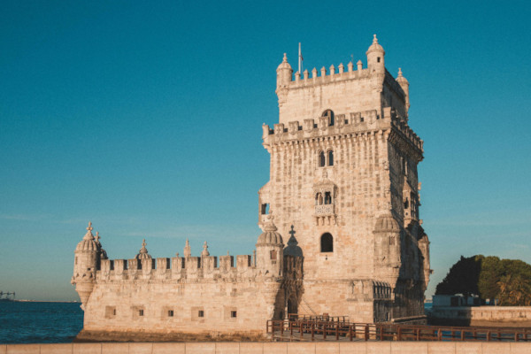
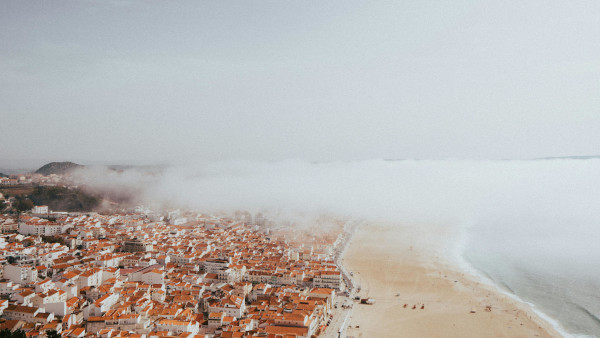

Géographie et Climat
Le Portugal, situé à l'extrême ouest de l'Europe, partage une frontière terrestre avec l'Espagne au nord et à l'est, tandis que ses côtes occidentale et méridionale sont bordées par l'Océan Atlantique. Son paysage est diversifié, allant des plaines fertiles de l'Alentejo aux montagnes escarpées de la Serra da Estrela. Le climat varie du méditerranéen au nord, avec des étés chauds et secs et des hivers doux et pluvieux, au semi-aride au sud, avec des étés chauds et secs et des hivers doux et pluvieux.
Histoire et Culture
Le Portugal a une histoire riche qui remonte à l'Antiquité, mais c'est surtout à l'époque des Grandes Découvertes, aux 15e et 16e siècles, que le pays a acquis une renommée mondiale. Son passé maritime a laissé un héritage culturel profond, avec des influences européennes, africaines, asiatiques et américaines. La culture portugaise est vibrante, allant de la mélancolie du fado à la joie des festivals traditionnels comme les fêtes des saints populaires. Son patrimoine architectural comprend des châteaux médiévaux, des palais baroques, des églises gothiques et des quartiers historiques préservés.
Tourisme et Attractions
Le Portugal est une destination touristique prisée pour ses paysages variés, allant des plages dorées de l'Algarve aux vignobles en terrasses du Douro en passant par les falaises de l'Alentejo. Les villes comme Lisbonne, Porto et Évora attirent les visiteurs avec leur mélange de patrimoine historique, de cuisine délicieuse et de vie culturelle animée. Les sites du patrimoine mondial de l'UNESCO, tels que le monastère des Hiéronymites et la tour de Belém à Lisbonne, ajoutent une touche d'histoire et de prestige à l'expérience touristique.
Cuisine et Gastronomie
La cuisine portugaise est une célébration de la simplicité et de la fraîcheur des ingrédients locaux.
- La Morue
- Les Sardines Grillées
- Le Cochon de Lait Rôti
- Les Pasteis de Nata
- Les Queijadas
- Les Bolas de Berlim
- Le Vin de Porto
- Le Vinho Verde
- Le Vinho Branco
Art et Architecture
L'architecture portugaise est un mélange éclectique de styles, allant du roman au baroque en passant par le manuélin. Des joyaux architecturaux comme le palais de la Pena à Sintra, la cathédrale de Porto et l'université de Coimbra témoignent de la richesse et de la diversité du patrimoine bâti du pays. Les artistes portugais, passés et présents, ont également laissé leur marque dans le monde de l'art, de la peinture à la sculpture en passant par la céramique et l'azulejo, une forme de carrelage décoratif traditionnel.
Éducation et Recherche
Le système éducatif portugais comprend un réseau d'universités publiques et privées, ainsi que des écoles primaires et secondaires. L'université de Coimbra, fondée en 1290, est l'une des plus anciennes universités d'Europe et reste un centre de recherche et d'enseignement de renommée mondiale. Le Portugal participe également à la recherche scientifique internationale dans des domaines tels que la biotechnologie, les sciences de l'environnement et l'ingénierie.
Sports et Loisirs
Le Portugal est un paradis pour les amateurs de sports et de loisirs. Le football est le sport national et les Portugais sont passionnés par leur équipe nationale ainsi que par les clubs de football comme le FC Porto, le SL Benfica et le Sporting CP. Outre le football, le pays offre une multitude d'activités de plein air, notamment le golf sur des parcours renommés comme ceux de l'Algarve, le surf sur les vagues de Nazaré et Peniche, la randonnée dans les montagnes du Parc naturel de la Serra da Estrela, et même le ski en hiver sur les pentes du même parc.
Transports et Infrastructures
Le Portugal dispose d'un réseau de transports moderne et bien développé. Les autoroutes relient les principales villes du pays, tandis que les chemins de fer offrent un moyen pratique de voyager entre les régions. Les aéroports internationaux de Lisbonne, Porto et Faro facilitent les voyages internationaux, tandis que les ports maritimes de Lisbonne et de Porto sont des hubs importants pour le transport de marchandises.
Festivals et Événements
Le Portugal est réputé pour ses festivals animés tout au long de l'année. Le Carnaval, célébré avant le Carême, est une explosion de couleurs, de musique et de danse à travers le pays. Les fêtes des saints populaires, telles que les Fêtes de Saint-Antoine à Lisbonne et les Fêtes de la Saint-Jean à Porto, sont des occasions joyeuses de célébrer la culture portugaise avec des défilés, des feux d'artifice et des spécialités culinaires. Les festivals de musique, de cinéma et de gastronomie attirent également des visiteurs du monde entier.